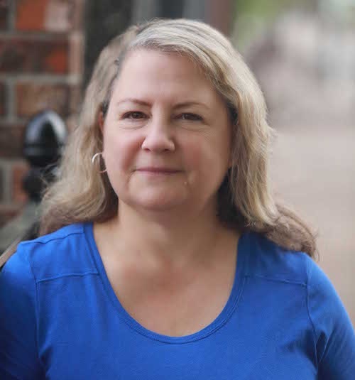
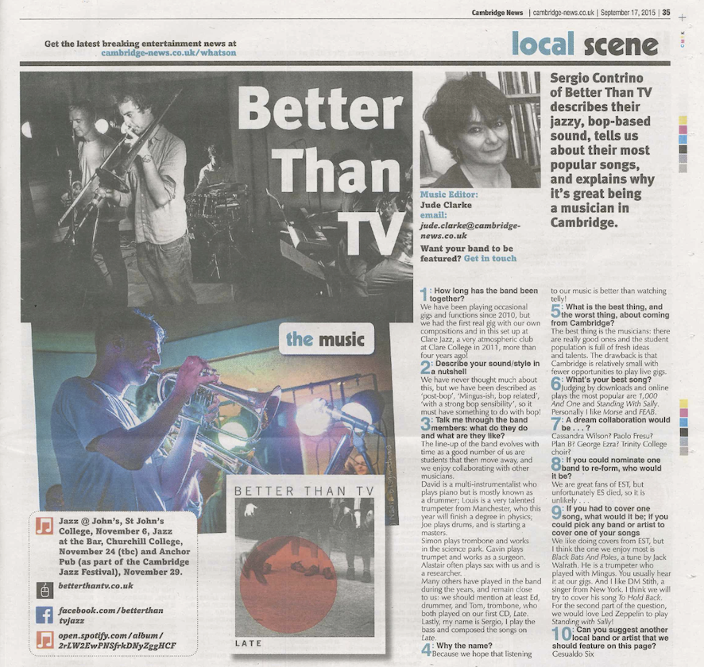

Better than TV had its formal debut in 2011. Our line up changed during the years as former students left Cambridge, and it is fluid and rather unconventional. We published two albums, ‘Late’ in 2015 and ‘Song from No Man’s Land’ in 2018, both receiving positive reviews and radio time.
We play regularly in Cambridge and London.
FOLLOW US!
Better than TV had its formal debut in 2011. Our line up changed during the years as former students left Cambridge, and it is fluid and rather unconventional. We published two albums, ‘Late’ in 2015 and ‘Song from No Man’s Land’ in 2018, both receiving positive reviews and radio time.
We play regularly in Cambridge and London.
Interview with Debbie Burke on Song from No Man's Land
Interview with Jude Clark on Late for the Cambridge News
It must have something to do with bop
1: How long have you been together as a band? (How did you meet)? We have been playing occasional gigs and functions since 2010, but we had the first real gig with our own compositions and in this sort of set up at Clare Jazz, a very atmospheric club at Clare College in 2011, more than 4 years ago! 2: Describe your sound/style in a nutshell We have never thought much about this, but we have been described as ‘post-bop’, ‘Mingus-ish, bop related’, ‘with a strong bop sensibility’, so it must have something to do with bop! 3: Talk me through the band members: what do they do and what are they like? The line-up of the band evolves with time as a good number of us are students that then move away, and we enjoy collaborating with other musicians. David is a multi instrumentalist who plays piano but is mostly known as a drummer; Louis is a very talented trumpeter from Manchester, and this year will finish a degree in physics; Joe plays drums, and is starting a master. Simon plays trombone and works in the science park. Gavin plays trumpet and works as a surgeon. Alastair often plays sax with us and is a researcher. Many others have played in the band during the years, and remain close to us: we should mention at least Ed, drummer, and Tom, trombone, who both played in our first CD, Late. Lastly, my name is Sergio, I play the bass and composed the tracks of our album. 4: Why the name? Because we hope that listening to our music is better than watching telly! 5: What is the best thing, and the worst thing, about coming from Cambridge? The best thing is the musicians, there are really good ones and the students’ population is full of fresh ideas and talents. The drawback is that Cambridge is relatively small with less opportunities to play live gigs. 6: What’s your best song? Judging by downloads and on-line plays the most popular are ‘1000 and one’ and ‘Standing with Sally’. Personally I like ‘Morse’ and ‘FEAB’. 7: A dream collaboration would be…? Cassandra Wilson? Paolo Fresu? Plan B? George Ezra? Trinity College choir? 8: If you could nominate one band to re-form, who would it be? We are great fan of E.S.T., but unfortunately ES died, so it is unlikely... 9: If you had to cover one song, what would it be; if you could pick any band or artist to cover one of your songs We like doing covers from EST, but I think the one we enjoy most is ‘Black Bats and Poles’ a tune by Jack Walrath. He is a trumpeter who played with Mingus. You usually hear it at our gigs! And I like DM Stith, a singer from New York. I think we will try to cover his song ‘To Hold Back’. We would love Led Zeppellin to play ‘Standing with Sally’! 10:Can you suggest another local band or artist that we should feature on this page? Gesualdo SixFOLLOW US!